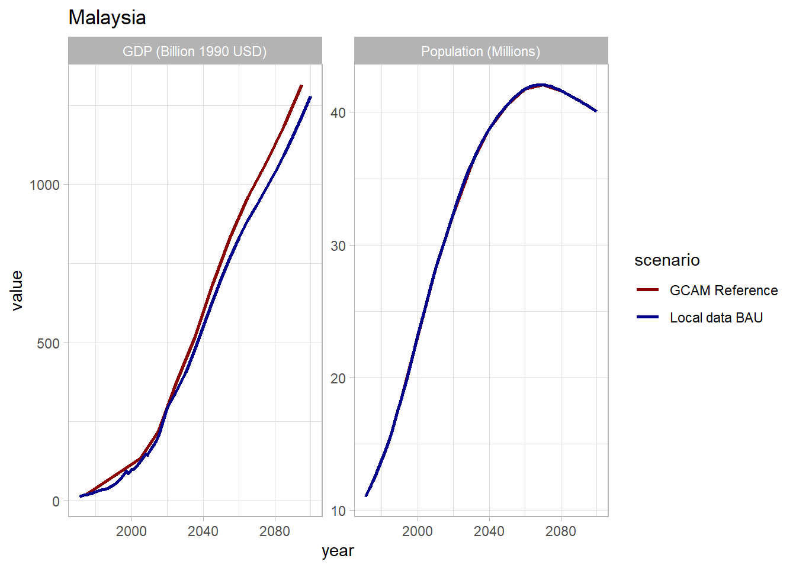
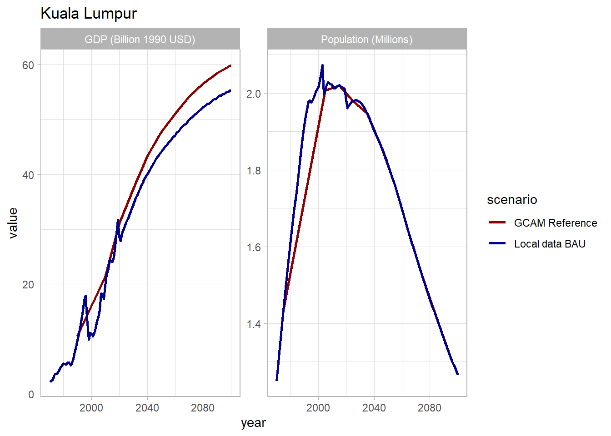

1 Download GCAM SE Asia

Please use the link below to download GCAM.
| File | Location |
|---|---|
| gcamv5p3_seasia | Link |
You will need the following prerequisites in order to run GCAM. You will also need at least 8 GB of RAM on your computer.
| Prerequisite | Link |
|---|---|
| Java 64 | Install Java 64 |
| R | Install R |
| RStudio | Install RStudio |
| Windows XML Maker | Install Windows XML Maker |
2 Guides
Below are links to an overview and walkthrough of GCAM.
| Description | File |
|---|---|
| GCAM overview presentation | gcam_overview.pdf |
| GCAM walkthrough presentation | gcam_walkthrough.pdf |
3 Scenarios
Below are links to configuration files for the three scenarios that we will be using. The Business as Usual scenario models a reference case with no policies imposed, or the result of no additional action now. The Policies scenario includes targets for power generation, buildings, industry, and transportation sourced from Malaysia and Kuala Lumpur policies and plans. The Carbon Neutral scenario uses the same policies, but with an additional emissions constraint specifying that Malaysia must reach carbon neutrality by 2050.
| Description | File |
|---|---|
| Business as Usual Scenario | configuration_seasia_cities_bau.xml |
| Policies Scenario | configuration_seasia_cities_policies.xml |
| Carbon Neutral Scenario | configuration_seasia_cities_carbon_neutral |
4 Policies
The policies modeled in the Policies and Carbon Neutral scenarios were sourced from Malaysia and Kuala Lumpur policies and plans. The table below details policies by sector with key values and targets as well as the source document/s (click to enlarge, click again to return to the main page).
Sets of policies modeled

The following subsections give additional technical details and explanations for the policies listed above.
4.1 High Efficiency Appliances
| Scenario | Files Used | Description |
|---|---|---|
| Policies, Carbon Neutral | buildings_efficient_appliances.xml | Increase prevelance of high-efficiency technologies through 2050 |
Goal
The goal of this policy is to represent an increase in energy efficient technologies in the building sector.
Approach
We can adjust the shareweights for technologies like air conditioners, water heaters, and other appliances to encourage the use of high efficiency technologies and discourage the use of low efficiency appliances.
Background - Share weights
Share weights are assigned to different subsectors and technology
choices in GCAM to represent non-cost factors of consumer choice. They
are used primarily to calibrate market shares to historical data but can
also be modified to reflect factors such as infrastructure development
or shifting societal preferences. For more information on share weights
and how they are used in GCAM’s economic choice functions, see the GCAM economic
choice documentation. Share weights should not be used to represent
cost-related policies. Additionally, shareweight interpolation rules
(fixed, linear, or s-curve) can
be used to automatically interpolate shareweights between given years.
GCAM Implementation
- Create a folder in the input directory:
./gcam-core/input/addons. - Download the “buildings_efficient_appliances.xml” file to the folder.
- To adjust the year in which the target mix of technologies is
achieved: within each
stub-technologytag in the XML, change theto-yearin the firstinterpolation-ruleand thefrom-yearin the second. Also change theyearof theperiodtag in which theshare-weightis 0. - Save the xml and then point to it in your configuration file by
adding the line:
<Value name = "scen">../input/addons/malaysia/buildings_efficient_appliances.xml</Value>
4.2 Lighting Efficiency
| Scenario | Files Used | Description |
|---|---|---|
| Policies, Carbon Neutral | buildings_led.xml | Gradually phases non-LED residential lighting technology out of the market by 2050 |
Goal
The goal of this policy is to represent increasing use of LED lighting in residential buildings and the decreasing use of other less energy efficient lighting technologies.
Approach
We can gradually decrease the shareweights of all non-LED residential lighting technologies in order to phase them out of the market. The year in which the non-LED shareweights reach 0 corresponds with the year in which 100% LED residential lighting is achieved.
Background - Share weights
Share weights are assigned to different subsectors and technology
choices in GCAM to represent non-cost factors of consumer choice. They
are used primarily to calibrate market shares to historical data but can
also be modified to reflect factors such as infrastructure development
or shifting societal preferences. For more information on share weights
and how they are used in GCAM’s economic choice functions, see the GCAM economic
choice documentation. Share weights should not be used to represent
cost-related policies. Additionally, shareweight interpolation rules
(fixed, linear, or s-curve) can
be used to automatically interpolate shareweights between given years.
GCAM Implementation
- Create a folder in the input directory:
./gcam-core/input/addons. - Download the “buildings_led.xml” file to the folder.
- To adjust the year in which 100% LED lighting is achieved: within
each non-LED
stub-technologytag in the XML, change theto-yearin the firstinterpolation-ruleand thefrom-yearin the second. Also change theyearof theperiodtag in which theshare-weightis 0. - Save the xml and then point to it in your configuration file by
adding the line:
<Value name = "scen">../input/addons/malaysia/buildings_led.xml</Value>
4.3 Building Envelope Efficiency
| Scenario | Files Used | Description |
|---|---|---|
| Policies, Carbon Neutral | buildings_shell_eff.xml | Decreases shell conductance from 3.75 in 2020 to 0.487 (residential) / 0.375 (commercial) in 2070 at an annual rate of 4% (residential) / 4.5% (commercial) |
Goal
The goal of this example is to represent increasing compliance with the envelope efficiency component of building energy codes.
Approach
We can use GCAM’sshell-conductance parameter to represent
an increase in the average building envelope efficiency according to
building energy codes.
Background - Cooling Demand
Cooling demand in GCAM depends on the indoor-outdoor temperature
difference (measured using cooling degree days or CDD), the building’s
shell conductance, and the building’s external heat gains along with GDP
and price factors. For more details and to view the equation used to
calculate cooling demand, see the Building service
demand section of the GCAM
energy demand documentation. GCAM’s shell-conductance
parameter is the inverse of building envelope efficiency. Its units are
watts per square meter per degree Kelvin and it represents the amount of
heat transferred through the building’s exterior when there is a
difference between the indoor and outdoor temperature.
GCAM Implementation
- Create a folder in the input directory:
./gcam-core/input/addons. - Download the “buildings_shell_eff.xml” file to the folder.
- To make custom adjustments: within each
gcam-consumertag in the XML, specify the desiredshell-conductancevalues for each year. - Save the xml and then point to it in your configuration file by
adding the line:
<Value name = "scen">../input/addons/malaysia/buildings_shell_eff.xml</Value>
4.4 Hydrogen in Industry
| Scenario | Files Used | Description |
|---|---|---|
| Policies, Carbon Neutral | industry_h2.xml | Phases hydrogen industrial technologies into the market in 2030 |
Goal
The goal of this policy is to represent a phase-in of industrial technologies that use hydrogen as a fuel source.
Approach
To represent a phase-in of hydrogen technologies, we can gradually increase their shareweights.
Background - Share weights
Share weights are assigned to different subsectors and technology
choices in GCAM to represent non-cost factors of consumer choice. They
are used primarily to calibrate market shares to historical data but can
also be modified to reflect factors such as infrastructure development
or shifting societal preferences. For more information on share weights
and how they are used in GCAM’s economic choice functions, see the GCAM economic
choice documentation. Share weights should not be used to represent
cost-related policies. Additionally, shareweight interpolation rules
(fixed, linear, or s-curve) can
be used to automatically interpolate shareweights between given years.
GCAM Implementation
- Create a folder in the input directory:
./gcam-core/input/addons. - Download the “industry_h2.xml” file to the folder.
- To adjust how quickly hydrogen technologies are phased into the
market: within each
subsectortag in the XML, change theto-yearin theinterpolation-rule. Also change theyearof theperiodtag in which theshare-weightis 1. Be sure that these years match. An earlier year corresponds to a faster phase-in. - Save the xml and then point to it in your configuration file by
adding the line:
<Value name = "scen">../input/addons/malaysia/industry_h2.xml</Value>
4.5 Industry Energy Efficiency
| Scenario | Files Used | Description |
|---|---|---|
| Policies, Carbon Neutral | industry_aeei.xml | Increases overall efficiency of industrial processes by 2.5% annually through 2070 |
Goal
The goal of this policy is to represent measures to increase average efficiency of industrial processes.
Approach
To represent a gradual increase in industrial efficiency, we can use
GCAM’s aeei parameter, which controls the autonomous energy
efficiency improvement (AEEI) of industrial processes.
GCAM Implementation
- Create a folder in the input directory:
./gcam-core/input/addons. - Download the “industry_aeei.xml” file to the folder.
- To adjust the rate of industrial energy efficiency increase, change
the value of the
aeeitag for each desired year. - Save the xml and then point to it in your configuration file by
adding the line:
<Value name = "scen">../input/addons/malaysia/industry_aeei.xml</Value>
4.6 Public/Private Vehicle Modal Shift
| Scenario | Files Used | Description |
|---|---|---|
| Policies, Carbon Neutral | trn_modal_shift.xml | Increases ratio of public to private transportation to 50-50 in Kuala Lumpur and 42-58 in the rest of the country in 2050 |
Goal
The goal of this policy is to increase the shares of public transportation methods relative to private transportation.
Approach
FILL IN HERE
GCAM Implementation
- Create a folder in the input directory:
./gcam-core/input/addons. - Download the “trn_modal_shift.xml” file to the folder.
- To make custom adjustments _______________.
- Save the xml and then point to it in your configuration file by
adding the line:
<Value name = "scen">../input/addons/malaysia/trn_modal_shift.xml</Value>
4.7 EV Cost Parity
| Scenario | Files Used | Description |
|---|---|---|
| Policies, Carbon Neutral | trn_ev_cost_parity.xml | Reduces EV costs to reach cost parity with liquids vehicles by 2030 (passenger) and 2040 (freight) |
Goal
The goal of this policy is represent measures to make EVs more competitive with combustion engine vehicles (CEV).
Approach
To represent EV promotion, we use an approach that decreases the cost of
EVs relative to CEVs, until the two technologies reach cost parity in
some future year. We can do this using GCAM’s input-cost
parameter, which represents the non-energy costs of a given technology.
Background - Transportation Cost
In GCAM, the costs of different transportation technologies are
comprised of two components: fuel costs and non-fuel costs. A
transportation technology’s fuel cost is determined by its vehicle fuel
intensity as well as fuel price. The non-fuel costs encompass factors
such as capital costs, operation and maintenance, and service costs.
These non-fuel costs can be adjusted using the input-cost
parameter. For more information on how transportation demand is modeled
in GCAM, including cost calculations, see the transportation sections of
the GCAM Demand for
Energy documentation.
GCAM Implementation
- Create a folder in the input directory:
./gcam-core/input/addons. - Download the “[trn_ev_cost_parity.xml](https://github.com/JGCRI/seasia/blob/main/modeling/malaysia/sectoral_policies/trn_ev_cost_parity.xml” file to the folder.
- To make custom adjustments to the EV cost trajectory, set the
desired
input-costfor each year within eachstub-technologytag in the cost parity xml file. - Save the xml and then point to it in your configuration file by
adding the line:
<Value name = "scen">../input/addons/malaysia/trn_ev_cost_parity.xml</Value>
4.8 Electricity Generation Mix
| Scenario | Files Used | Description |
|---|---|---|
| Policies, Carbon Neutral | elec_gen_shares.xml | Sets floors for renewable electricity generation technologies |
| Policies, Carbon Neutral | elec_hydro.xml | Sets exogenous hydropower generation |
Goal
The goal of this example is to set a minimum value (floor) in GCAM for the amount of electricity generation from three renewable energy technologies (solar, hydro, and biomass) corresponding with the planned percentages in the KLLCSBP2030 (below).

Approach
One way to set a generation floor for each fuel type in GCAM is to use a subsidy policy. This will lower the cost of the electricity generation technology until the floor is reached. If there is more demand for electricity than is supplied by the sum of the generation floors, then the remaining demand will be met by a mix of fuels determined by the market.
Hydropower is exogenous in GCAM and has a fixed pathway. The power generation values for this technology are set explicitly using a fixed output add-on XML.
Background - Policy portfolio standards
A policy-portfolio-standard in GCAM is a policy that can be
used to implement taxes, subsidies, floors, ceilings, and constraints.
Taxes and subsidies can be specified when the exact amount to be added
or subtracted to the price is known. However, a
policy-portfolio-standard can also contain a
constraint, which acts as either a floor or ceiling for the
technology or technologies included. Exact constraints can also be
implemented. See the GCAM
Policy Examples documentation for more information on how to
implement these options.
GCAM Implementation
- Create a folder in the input directory eg.
./gcam-core/input/addons/malaysia. - Download the “elec_gen_shares.xml” file to the folder.
- To make adjustments: within each
policy-portfolio-standardtag in the XML, adjust the following:
-
constraintfor each year in which a floor is desired -
Set
min-priceto a large negative value for years in which an exact constraint, rather than a floor, is desired
- Within each
supplysectortag in the XML, make sure that the correspondinginput-subsidyis added within each relevantperiodfor eachstub-technologyyou wish to constrain. - To adjust the hydropower pathway, download the “elec_hydro.xml” file to the folder.
- Within each
fixedOutputtag in the XML, adjust the value to reflect desired hydropower output in each period. The user can also add additional periods. - Save the XMLs and then point to them in your configuration file by
adding the lines:
<Value name = "scen">../input/addons/malaysia/elec_gen_shares.xml</Value><Value name = "scen">../input/addons/malaysia/elec_hydro.xml</Value>
4.9 Coal Phase-Out
| Scenario | Files Used | Description |
|---|---|---|
| Policies, Carbon Neutral | elec_no_new_coal.xml | Prevents additional coal capacity from being built starting in 2020 |
| Policies, Carbon Neutral | elec_coal_shutdown.xml | Retires existing coal capacity; all coal is retired by 2050 |
Goal
The goal of this example is to phase out coal from Malaysia’s electricity generation capacity. Note that this policy only applies at the national level.
Approach
There are two steps to phase out coal generation. The first is to prevent any new coal capacity from being built; we do this by setting coal shareweights to 0 in all future years. The second step is to gradually retire all existing coal capacity; we do this by shortening coal technologies’ lifetimes and by assigning a shutdown curve to each technology.
Background - Share weights
Share weights are assigned to different subsectors and technology
choices in GCAM to represent non-cost factors of consumer choice. They
are used primarily to calibrate market shares to historical data but can
also be modified to reflect factors such as infrastructure development
or shifting societal preferences. For more information on share weights
and how they are used in GCAM’s economic choice functions, see the GCAM economic
choice documentation. Share weights should not be used to represent
cost-related policies. Additionally, shareweight interpolation rules
(fixed, linear, or s-curve) can
be used to automatically interpolate shareweights between given years.
Background - Energy Technology Retirement
For some energy technologies, such as coal, the “cohort” installed in
each period is modeled as a separate technology. Therefore, even if no
new capacity is installed in future years, output from the capacity
installed in previous years will still be modeled. There are several
GCAM parameters that determine the trajectory of output from previously
installed technology cohorts. The lifetime is the maximum
number of years for which the technology cohort can continue producing
output; i.e., a technology cohort installed in year t will
no longer produce any output in the year t + lifetime. The
s-curve-shutdown-decider is a function that controls the
speed at which the technology cohort retires, or reduces its output,
within its lifetime. This function depends on a steepness
parameter that determines the shape of the function as well as a
half-life parameter that sets the number of years after
which half of the technology cohort is retired. For more information on
retirement parameters, see the GCAM Energy
Technologies documentation.
GCAM Implementation
- Create a folder in the input directory eg.
./gcam-core/input/addons. - Download the “elec_no_new_coal.xml” and “elec_coal_shutdown.xml” files to the folder.
- To make custom adjustments to the coal retirement trajectory,
optionally change the following within each
stub-technologytag in the retirement XML:
-
Use
lifetimeto adjust the year in which the coal phase-out is complete; the phase-out will be completexyears after 2015, wherexis thelifetime. -
Use the
steepnessandhalf-lifewithin thes-curve-shutdown-deciderto adjust the phaseout trajectory; a smallerhalf-lifeand largersteepnesswill result in a faster phase-out.
- Save the xmls and then point to them in your configuration file by
adding the lines:
<Value name = "scen">../input/addons/malaysia/elec_no_new_coal.xml</Value><Value name = "scen">../input/addons/malaysia/elec_coal_shutdown.xml</Value>
5 Net-Zero & Carbon Netural
| Scenario | Files Used | Description |
|---|---|---|
| Carbon Neutral | NetZeroC_Malaysia_2035_2050 | CO2 emissions constraint for Malaysia (2035 - 2050) |
| Carbon Neutral | Malaysia_LUC | GHG link file for Malaysia for land use change emissions |
| Carbon Neutral | NetZeroC_global_noMalaysia_2050 | CO2 emissions constraint for the rest of the World (2050) |
| Carbon Neutral | ROW_LUC_noMalaysia | GHG link file for land use change emissions for the rest of the world |
Goal
The aim of this example is to demonstrate how to apply an economy-wide emissions constraint for Malaysia in accord with its national goals: net-zero CO2 by 2050.
Approach
In GCAM, an emissions constraint can be accomplished by using a
ghgpolicy, which is a special case of
policy-portfolio-standard that applies to emissions.
Background
To implement a ghgpolicy in GCAM, users specify the
total amount of emissions (CO2 or GHG) in a time period. GCAM
will then calculate the price on carbon needed to reach the constraint
in each period. GCAM finds the least-cost pathway in terms of technology
deployment to satisfy the emissions constraint. An economy-wide
constraint can be used by itself, or in combination with additional
sectoral policies described above.
GCAM Implementation
Create a folder in the input directory:
./gcam-core/input/addons.Download the emissions constraint xml file(s) for Malaysia: NetZeroC_Malaysia_2035_2050 and Malaysia_LUC, as well as those for the rest of the world (ROW), NetZeroC_global_noMalaysia_2050 and ROW_LUC_noMalaysia.
The first file,
NetZeroC_Malaysia_2035_2050, specifies emissions in units of tonnes of carbon (not CO2) in each period. One way to determine the emissions constraint for each period is to examine the CO2 emissions in the reference case (See ModelInterface: “CO2 emissions by region”). Based on the reference emissions, one can create an emissions constraint accordingly, depending on the start date of the emissions constraint, end goal, and steepness of the decrease in emissions.You will notice that the constraint starts in 2035. We want to first incorporate the pathway for Malaysia’s Nationally Determined Contribution (NDC) from 2020 to 2030. Malaysia’s NDC includes a target to reduce its greenhouse gas (GHG) emissions intensity of GDP by 45% by 2030 relative to the emissions intensity of GDP in 2005. When we examine GHG emissions (See ModelInterface: “nonCO2 emissions by region”) and GDP (See ModelInterface: “GDP MER by region”), we see that this target is met without any additional policy in the reference scenario. Thus, we only need to start our constraint in 2035. We specify a linear decrease to 0 tonnes of C in 2050.
We adopt a similar approach for the ROW, using the total emissions (tC) in 2020 for all countries as a starting point. (We did not subtract our Malaysia’s emissions, as they are quite small globally). It is not absolutely necessary to adopt the very same emissions constraint for the ROW, but the constraint should be strong enough to avoid carbon leakage from Malaysia’ net-zero policy.
One needs to decide whether and how land use change emissions are incorporated into the constraint. GCAM accounts for fossil fuel and industry CO2 emissions separately from land use change CO2 emissions. The
Malaysia_luc.xmlspecifies how land use change CO2 emissions (LUC-CO2) in Malaysia are linked to the ghgpolicy (“CO2”). There are two parameters:price-adjustanddemand-adjust. Price-adjust is used to convert prices for different GHG’s. A price-adjust of 1.0 for LUC-CO2 means the market price on LUC-CO2 emissions is the same as the price applied to fossil fuel and industry CO2 emissions. A demand-adjust of 1 means that LUC-CO2 emissions are counted in the emissions constraint. These two parameters can be adjusted. In the sample files we have a price-adjust of 0, and a demand-adjust of 1. This can be modified depending on the goal and importance of LUC emissions. Note that Malaysia is removed from theROW_LUC_noMalaysia.xml.Save the xml files and then point to them in your configuration file by adding the line:
<Value name = "scen">../input/addons/malaysia/NetZeroC_Malaysia_2035_2050.xml</Value><Value name = "scen">../input/addons/malaysia/Malaysia_LUC.xml</Value><Value name = "scen">../input/addons/malaysia/NetZeroC_global_noMalaysia_2050.xml</Value><Value name = "scen">../input/addons/malaysia/ROW_LUC_noMalaysia.xml</Value>
6 Diagnostics
This section describes how to explore and compare the final output data using GCAM-specific post-processing tools.
6.1 Extract GCAM Data
gcamextractor is an R package used to extract and
process GCAM data and manipulate into standardized tables.
gcamextractor converts GCAM outputs into commonly used
units as well as aggregates across different classes and sectors for
easy use in plots, maps, and tables. For more information, please
reference the documentation page found here.
The first step is to create a path to the GCAM database, found in the
output folder of your GCAM folder, and a list of desired parameters. The
readgcam() function also requires region names and a
specific output folder. Note that due to size limiations on GitHub, the
data used here has already been processed, but we include the steps to
run it on your own in the following chunk if desired.
# Get desired database paths
ref_db <- "../data/malaysia/output/malaysia_ref"
high_db <- "../data/malaysia/output/malaysia_high"
high_cn_db <- "../data/malaysia/output/malaysia_carbon_neutral_high"
paths <- c(ref_db, high_db, high_cn_db)
# Choose parameters of interest
params <- c("elecByTechTWh", "elecConsumByDemandSectorTWh",
"emissCO2BySectorNoBio", "emissGHGBySectorGWPAR5", "emissGHGByGasGWPAR5",
"energyFinalByFuelEJ", "energyFinalConsumBySecEJ", "energyPrimaryByFuelEJ",
"energyFinalSubsecBySectorBuildEJ", "energyFinalSubsecByFuelBuildEJ",
"energyFinalSubsecByFuelIndusEJ",
"transportFreightVMTByMode", "transportPassengerVMTByMode",
"transportFreightVMTByFuel", "transportPassengerVMTByFuel",
"transportPassengerVMTByTech", "transportFreightVMTByTech",
"buildingFloorspace", "gdp", "gdpPerCapita", "pop")
# Identify regions
regions <- c("Malaysia", "KualaLumpur", "Rest of Malaysia")
# Loop through each database to get gcamextractor output
for(p in paths){
gcamextractor::readgcam(gcamdatabase = p,
regionsSelect = regions,
regionsAggregate = list(regions),
regionsAggregateNames = "All of Malaysia",
paramsSelect = params,
folder = paste0("../data/malaysia/gcamextractor/", tail(strsplit(p, "/")[[1]],1)))
}ref <- read.csv("../data/malaysia/gcamextractor/malaysia_ref/gcamDataTable_aggClass1.csv")
high <- read.csv("../data/malaysia/gcamextractor/malaysia_high/gcamDataTable_aggClass1.csv")
high_cn <- read.csv("../data/malaysia/gcamextractor/malaysia_carbon_neutral_high/gcamDataTable_aggClass1.csv")
malaysia <- bind_rows(ref, high, high_cn) %>%
filter(region != ("Rest of Malaysia"),
x > 2000, x <= 2050)
malaysia$scenario <- factor(malaysia$scenario,
levels = c("Ref", "High", "High_CarbonNeutral"),
labels = c("Business as Usual", "Policies", "Net Zero"))
# Define reference scenario
REF_SCENARIO <- "Business as Usual"
# Use this to access reference scenario plot
c <- paste0("chart_class_", REF_SCENARIO)6.2 Plot Figures
rchart is a comprehensive charting package to plot and
compare data across scenarios, regions, sectors and time periods in
GCAM. The diagnostic figures below were created using
gcamextractor and rchart and include the
following parameters:
- Socioeconomics: population, GDP, GDP per capita
- CO2 emissions by sector
- GHG emissions by sector and gas
- Final energy by fuel
- Final energy by sector
- Electricity generation by fuel
- Electricity generation by sector
- Building energy by subsector
- Transportation by mode
- Transportation by fuel
- Industry energy by fuel
To enlarge a figure, please click directly on the image. Click on the image again to close out.
6.2.1 Summary Figures
6.2.1.1 Socioeconomic Summary
6.2.1.1.1 Malaysia vs Kuala Lumpur
socioeconomic_parameters <- c("pop", "gdp", "gdpPerCapita")
socioeconomic <- malaysia %>%
filter(param %in% socioeconomic_parameters,
region != "All of Malaysia",
scenario == REF_SCENARIO) %>%
mutate(param = units) %>%
rchart::chart(save = F,
show = F,
size_text = 19)
socioeconomic$chart_region_absolute
6.2.1.1.2 Malaysia
socioeconomic_my <- malaysia %>%
filter(param %in% socioeconomic_parameters,
region == "Malaysia") %>%
mutate(param = units,
scenario = REF_SCENARIO) %>%
rchart::chart(save = F,
show = F,
size_text = 19)
socioeconomic_my$chart_param
6.2.1.1.3 Kuala Lumpur
socioeconomic_kl <- malaysia %>%
filter(param %in% socioeconomic_parameters,
region == "KualaLumpur") %>%
mutate(param = units,
scenario = REF_SCENARIO) %>%
rchart::chart(save = F,
show = F,
size_text = 19)
socioeconomic_kl$chart_param
6.2.1.2 Emissions by Sector and Gas
6.2.1.2.1 Malaysia vs Kuala Lumpur
co2 <- malaysia %>% filter(param == "emissCO2BySectorNoBio",
region != "Malaysia") %>%
mutate(value = value * 3.67,
units = "CO2 Emissions (MTCO2eq)")
ghg <- malaysia %>% filter(param == "emissGHGBySectorNoBioGWPAR5",
region != "Malaysia")
malaysia_emissions <- bind_rows(co2, ghg) %>%
mutate(class = case_when(grepl("International",class)~"Transportation",
grepl("alumin|desalinated|refining|urban|coal|gas|oil|hydrogen|agricultural|crops",class)~"Industry",
TRUE~class)) %>%
filter(class != "LUC")emissions <- malaysia_emissions %>%
mutate(param = units) %>%
rchart::chart(save = F,
show = F,
size_text = 10)
emissions[[c]]
co2_gas <- co2 %>%
mutate(class = "CO2",
param = "emissGHGByGasNoBioGWPAR5")
ghg_gas <- malaysia %>%
filter(param == "emissGHGByGasNoBioGWPAR5",
class != "CO2",
region != "Malaysia")
malaysia_emissions_gas <- bind_rows(co2_gas, ghg_gas)gas <- malaysia_emissions_gas %>%
mutate(param = units) %>%
rchart::chart(save = F,
show = F,
size_text = 10)
gas[[c]]
6.2.1.2.2 Malaysia
co2_my <- malaysia %>%
filter(param == "emissCO2BySectorNoBio",
region == "All of Malaysia") %>%
mutate(value = value * 3.67,
units = "CO2 Emissions (MTCO2eq)",
param = "CO2 Emissions",
class = case_when(grepl("International",class)~"transport",
grepl("refin|hydrogen",class)~"other",
TRUE~class)) %>%
group_by(scenario, region, class, units, param, x, xLabel, classLabel, subRegion, vintage) %>%
summarize(value = sum(value)) %>%
ungroup()
ghg_my <- malaysia %>%
filter(param == "emissGHGBySectorNoBioGWPAR5",
region == "All of Malaysia") %>%
mutate(param = "GHG Emissions by Sector",
class = case_when(grepl("alumin",class)~"industry",
grepl("International",class)~"transport",
grepl("desalinated|refin|urban|coal|gas|oil|biomass|hydrogen|agricultural|crops|livestock", class)~"other",
TRUE~class)) %>%
group_by(scenario, region, class, units, param, x, xLabel, classLabel, subRegion, vintage) %>%
summarize(value = sum(value)) %>%
ungroup()
my_emissions <- bind_rows(co2_my, ghg_my) emissions_my_plot <- my_emissions %>%
mutate(param = units) %>%
rchart::chart(save = F,
show = F,
scenRef = REF_SCENARIO)
emissions_my_plot$chart_param
ghg_gas_my <- malaysia %>%
filter(param == "emissGHGByGasNoBioGWPAR5",
class != "CO2",
region == "All of Malaysia") %>%
mutate(param = "GHG Emissions by Gas")
my_emissions_gas <- bind_rows(ghg_gas_my, my_emissions) %>%
filter(class != "LUC")gas_my <- my_emissions_gas %>%
rchart::chart(save = F,
show = F,
scenRef = REF_SCENARIO,
summary_line = T,
size_text = 12,
ncol = 4)
gas_my$chart_class
gas_my$chart_class_diff_absolute
6.2.1.2.3 Kuala Lumpur
co2_kl <- malaysia %>%
filter(param == "emissCO2BySectorNoBio",
region == "KualaLumpur") %>%
mutate(value = value * 3.67,
units = "CO2 Emissions (MTCO2eq)",
param = "CO2 Emissions",
class = case_when(grepl("International",class)~"transport", TRUE~class)) %>%
group_by(scenario, region, class, units, param, x, xLabel, classLabel, subRegion, vintage) %>%
summarize(value = sum(value)) %>%
ungroup()
ghg_kl <- malaysia %>%
filter(param == "emissGHGBySectorNoBioGWPAR5",
region == "KualaLumpur") %>%
mutate(param = "GHG Emissions by Sector",
class = case_when(grepl("International",class)~"transport", TRUE~class)) %>%
group_by(scenario, region, class, units, param, x, xLabel, classLabel, subRegion, vintage) %>%
summarize(value = sum(value)) %>%
ungroup()
kl_emissions <- bind_rows(co2_kl, ghg_kl) emissions_kl_plot <- kl_emissions %>%
mutate(param = units) %>%
rchart::chart(save = F,
show = F,
size_text = 12)
emissions_kl_plot$chart_param
ghg_gas_kl <- malaysia %>%
filter(param == "emissGHGByGasNoBioGWPAR5",
class != "CO2",
region == "KualaLumpur") %>%
mutate(param = "GHG Emissions by Gas")
kl_emissions_gas <- bind_rows(ghg_gas_kl, kl_emissions) gas_kl <- kl_emissions_gas %>%
rchart::chart(save = F,
show = F,
scenRef = REF_SCENARIO,
summary_line = T,
size_text = 10,
ncol = 4)
gas_kl$chart_class
gas_kl$chart_class_diff_absolute
6.2.1.3 Final Energy by Fuel and Sector
6.2.1.3.1 Malaysia vs Kuala Lumpur
energy_parameters <- c("energyFinalConsumBySecEJ", "energyFinalByFuelEJ")
energy <- malaysia %>%
filter(param %in% energy_parameters,
region != "Malaysia") %>%
mutate(param = units) %>%
rchart::chart(save = F,
show = F,
size_text = 10)
energy[[c]]
6.2.1.3.2 Malaysia
energy_my <- malaysia %>%
filter(param %in% energy_parameters,
region == "All of Malaysia") %>%
mutate(param = units) %>%
rchart::chart(save = F,
show = F,
scenRef = REF_SCENARIO,
size_text = 10,
ncol = 4)
energy_my$chart_class
energy_my$chart_class_diff_absolute
6.2.1.3.3 Kuala Lumpur
energy_kl <- malaysia %>%
filter(param %in% energy_parameters,
region == "KualaLumpur") %>%
mutate(param = units) %>%
rchart::chart(save = F,
show = F,
scenRef = REF_SCENARIO,
size_text = 10,
ncol = 4)
energy_kl$chart_class
energy_kl$chart_class_diff_absolute
6.2.1.4 Electricity Generation by Fuel and Sector
6.2.1.4.1 Malaysia vs Kuala Lumpur
electricity_parameters <- c("elecConsumByDemandSectorTWh", "elecByTechTWh")
electricity <- malaysia %>%
filter(param %in% electricity_parameters,
region != "Malaysia") %>%
mutate(param = units) %>%
rchart::chart(save = F,
show = F,
size_text = 10)
electricity[[c]]
6.2.1.4.2 Malaysia
electricity_my <- malaysia %>%
filter(param %in% electricity_parameters,
region == "All of Malaysia") %>%
mutate(param = units) %>%
rchart::chart(save = F,
show = F,
scenRef = REF_SCENARIO,
size_text = 10,
ncol = 4)
electricity_my$chart_class
electricity_my$chart_class_diff_absolute
6.2.1.4.3 Kuala Lumpur
electricity_kl <- malaysia %>%
filter(param %in% electricity_parameters,
region == "KualaLumpur") %>%
mutate(param = units) %>%
rchart::chart(save = F,
show = F,
scenRef = REF_SCENARIO,
size_text = 8,
ncol = 4)
electricity_kl$chart_class
electricity_kl$chart_class_diff_absolute
6.2.2 Sectoral Details
6.2.2.1 Building Energy by Subsector
6.2.2.1.1 Malaysia vs Kuala Lumpur
building_energy_resid <- malaysia %>%
filter(param == "energyFinalSubsecByResidSectorBuildEJ",
region != "Malaysia") %>%
mutate(param = units) %>%
rchart::chart(save = F,
show = F,
size_text = 12)
building_energy_resid[[c]]
building_energy_comm <- malaysia %>%
filter(param == "energyFinalSubsecByCommSectorBuildEJ",
region != "Malaysia") %>%
mutate(param = units) %>%
rchart::chart(save = F,
show = F,
size_text = 12)
building_energy_comm[[c]]
6.2.2.1.2 Malaysia
building_energy_resid_my <- malaysia %>%
filter(param == "energyFinalSubsecByResidSectorBuildEJ",
region == "All of Malaysia") %>%
mutate(param = units) %>%
rchart::chart(save = F,
show = F,
scenRef = REF_SCENARIO,
size_text = 12)
building_energy_resid_my$chart_class
building_energy_comm_my <- malaysia %>%
filter(param == "energyFinalSubsecByCommSectorBuildEJ",
region == "All of Malaysia") %>%
mutate(param = units) %>%
rchart::chart(save = F,
show = F,
scenRef = REF_SCENARIO,
size_text = 12)
building_energy_comm_my$chart_class
building_energy_resid_my$chart_class_diff_absolute
building_energy_comm_my$chart_class_diff_absolute
6.2.2.1.3 Kuala Lumpur
building_energy_resid_kl <- malaysia %>%
filter(param == "energyFinalSubsecByResidSectorBuildEJ",
region == "KualaLumpur") %>%
mutate(param = units) %>%
rchart::chart(save = F,
show = F,
scenRef = REF_SCENARIO,
size_text = 12)
building_energy_resid_kl$chart_class
building_energy_comm_kl <- malaysia %>%
filter(param == "energyFinalSubsecByCommSectorBuildEJ",
region == "KualaLumpur") %>%
mutate(param = units) %>%
rchart::chart(save = F,
show = F,
scenRef = REF_SCENARIO,
size_text = 12)
building_energy_comm_kl$chart_class
building_energy_resid_kl$chart_class_diff_absolute
building_energy_comm_kl$chart_class_diff_absolute
6.2.2.2 Transportation by Mode
6.2.2.2.1 Malaysia vs Kuala Lumpur
transport_mode_params <- c("transportFreightVMTByMode", "transportPassengerVMTByMode")
transport_m <- malaysia %>%
filter(param %in% transport_mode_params,
region != "Malaysia") %>%
mutate(param = units) %>%
rchart::chart(save = F,
show = F,
size_text = 12)
transport_m[[c]]
6.2.2.2.2 Malaysia
transport_my_m <- malaysia %>%
filter(param %in% transport_mode_params,
region == "All of Malaysia") %>%
mutate(param = units) %>%
rchart::chart(save = F,
show = F,
scenRef = REF_SCENARIO,
size_text = 12)
transport_my_m$chart_class
transport_my_m$chart_class_diff_absolute
6.2.2.2.3 Kuala Lumpur
transport_kl_m <- malaysia %>%
filter(param %in% transport_mode_params,
region == "KualaLumpur") %>%
mutate(param = units) %>%
rchart::chart(save = F,
show = F,
scenRef = REF_SCENARIO,
size_text = 12)
transport_kl_m$chart_class
transport_kl_m$chart_class_diff_absolute
6.2.2.3 Transportation by Fuel
6.2.2.3.1 Malaysia vs Kuala Lumpur
transport_fuel_params <- c("transportFreightVMTByFuel", "transportPassengerVMTByFuel")
transport_f <- malaysia %>%
filter(param %in% transport_fuel_params,
region != "Malaysia") %>%
mutate(param = units) %>%
rchart::chart(save = F,
show = F,
size_text = 12)
transport_f[[c]]
6.2.2.3.2 Malaysia
transport_my_f <- malaysia %>%
filter(param %in% transport_fuel_params,
region == "All of Malaysia") %>%
mutate(param = units) %>%
rchart::chart(save = F,
show = F,
scenRef = REF_SCENARIO,
size_text = 12)
transport_my_f$chart_class
transport_my_f$chart_class_diff_absolute
6.2.2.3.3 Kuala Lumpur
transport_kl_f <- malaysia %>%
filter(param %in% transport_fuel_params,
region == "KualaLumpur") %>%
mutate(param = units) %>%
rchart::chart(save = F,
show = F,
scenRef = REF_SCENARIO,
size_text = 12)
transport_kl_f$chart_class
transport_kl_f$chart_class_diff_absolute
6.2.2.4 Industry Energy by Subsector
6.2.2.4.1 Malaysia vs Kuala Lumpur
industry_energy <- malaysia %>%
filter(param == "energyFinalSubsecByFuelIndusEJ",
region != "Malaysia") %>%
mutate(param = units) %>%
rchart::chart(save = F,
show = F,
size_text = 12)
industry_energy[[c]]
6.2.2.4.2 Malaysia
industry_energy_my <- malaysia %>%
filter(param == "energyFinalSubsecByFuelIndusEJ",
region == "All of Malaysia") %>%
mutate(param = units) %>%
rchart::chart(save = F,
show = F,
scenRef = REF_SCENARIO,
size_text = 10,
ncol = 4)
industry_energy_my$chart_class
industry_energy_my$chart_class_diff_absolute
6.2.2.4.3 Kuala Lumpur
industry_energy_kl <- malaysia %>%
filter(param == "energyFinalSubsecByFuelIndusEJ",
region == "KualaLumpur") %>%
mutate(param = units) %>%
rchart::chart(save = F,
show = F,
scenRef = REF_SCENARIO,
size_text = 10,
ncol = 4)
industry_energy_kl$chart_class
industry_energy_kl$chart_class_diff_absolute
7 Assumptions and Validation
7.1 Socioeconomic assumptions
This section details the socioeconomic inputs used to define Malaysia and its subregions, Kuala Lumpur and “Rest of Malaysia,” in GCAM. These metrics include population, GDP, and GDP per capita. Historical and projection data were used when available, otherwise data was calculated using the assumptions described below.
| Variable | Assumptions | Data Sources |
|---|---|---|
| Population |
- Malaysia population used the medium variant projection and
historical data from the UN - KL census data gives a value for 2010. All other values were extrapolated and calculated using the growth rates for Malaysia in total - “Rest of Malaysia” values found by subtracting KL numbers from Malaysia |
- Malaysia: United
Nations - Kuala Lumpur 2010: United Nations |
| GDP |
- Malaysia annual growth rates are applied to KL’s 2020 GDP value
to extrapolate historical and future values - “Rest of Malaysia” values found by subtracting KL numbers from Malaysia |
- Malaysia, historical: USDA
ERS - Malaysia, future: SSP database - Kuala Lumpur 2020: Department of Statistics Malaysia |
7.2 Validation of GCAM outputs
This section will compare local data in sources from Malaysia and Kuala Lumpur to GCAM outputs.
7.2.1 Population and GDP
local_pop <- read.csv("../data/malaysia/local_data_population.csv")
local_gdp <- read.csv("../data/malaysia/local_data_gdp.csv")
local_bau <- bind_rows(local_gdp, local_pop)
gcam_bau <- malaysia %>%
filter(param == c("pop", "gdp"),
region != "Rest of Malaysia",
scenario == REF_SCENARIO) %>%
mutate(param = units,
scenario = "GCAM Reference",
year = x)
bau <- bind_rows(local_bau, gcam_bau)
# Plot for Malaysia
bau %>%
filter(region == "Malaysia") %>%
ggplot(aes(x = year, y = value, color = scenario)) +
geom_line() +
facet_wrap(~param, scales = "free") +
ggtitle("Malaysia") +
theme_light()
# Plot for KL
bau %>%
filter(region == "KualaLumpur") %>%
ggplot(aes(x = year, y = value, color = scenario)) +
geom_line() +
facet_wrap(~param, scales = "free") +
ggtitle("Kuala Lumpur") +
theme_light()
7.2.2 CO2 emissions by sector
malaysia_build_ind <- co2_my %>%
filter(scenario == REF_SCENARIO,
class %in% c("building", "industry")) %>%
mutate(param = units,
scenario = "GCAM Reference",
year = x)
malaysia_transport <- co2_my %>%
filter(scenario == REF_SCENARIO,
class %in% c("International Aviation", "International Shipping", "transport")) %>%
mutate(param = units,
scenario = "GCAM Reference",
year = x,
class = case_when(class %in% c("International Aviation", "International Shipping") ~ "transport",
T~class)) %>%
group_by(year) %>%
mutate(total = sum(value)) %>%
distinct(year, .keep_all = TRUE)
malaysia_co2 <- bind_rows(malaysia_build_ind, malaysia_transport)
malaysia_co2 %>%
ggplot(aes(x = year, y = value, fill = class)) +
geom_col() +
labs(title = "Malaysia, GCAM reference",
y = "MTCO2eq") +
scale_fill_manual(breaks = c("building", "industry", "transport"),
values = c("#facda4", "#cef4d1", "#d0f6f7")) +
theme_light()
local_co2 <- read.csv("../data/malaysia/local_data_emissions_by_sector.csv")
gcam_co2 <- co2_kl %>%
filter(scenario == REF_SCENARIO,
class %in% c("building", "industry")) %>%
mutate(param = units,
scenario = "GCAM Reference",
year = x)
# Aggregate GCAM classes into broad categories
gcam_transport <- co2_kl %>%
filter(scenario == REF_SCENARIO,
class %in% c("International Aviation", "International Shipping", "transport")) %>%
mutate(param = units,
scenario = "GCAM Reference",
year = x,
class = case_when(class %in% c("International Aviation", "International Shipping") ~ "transport",
T~class)) %>%
group_by(year) %>%
mutate(total = sum(value)) %>%
distinct(year, .keep_all = TRUE)
bau_co2 <- bind_rows(local_co2, gcam_co2, gcam_transport)
bau_co2 %>%
ggplot(aes(x = year, y = value, fill = class)) +
geom_col() +
facet_wrap(~scenario) +
labs(title = "Kuala Lumpur",
y = "MTCO2eq") +
scale_fill_manual(breaks = c("building", "industry", "transport"),
values = c("#facda4", "#cef4d1", "#d0f6f7")) +
theme_light()
7.2.3 Energy by fuel and sector
final_energy_ref_my <- malaysia %>%
filter(param %in% energy_parameters,
region == "All of Malaysia",
scenario == REF_SCENARIO) %>%
mutate(param = units) %>%
rchart::chart(save = F,
show = F)
final_energy_ref_my$chart_class
Final energy by fuel and sector in Malaysia.
final_energy_ref_kl <- malaysia %>%
filter(param %in% energy_parameters,
region == "KualaLumpur",
scenario == REF_SCENARIO) %>%
mutate(param = units) %>%
rchart::chart(save = F,
show = F)
final_energy_ref_kl$chart_class
Final energy by fuel and sector in Kuala Lumpur.
7.2.4 Electricity by fuel and sector
elec_ref_my <- malaysia %>%
filter(param %in% electricity_parameters,
region == "All of Malaysia",
scenario == REF_SCENARIO) %>%
mutate(param = units) %>%
rchart::chart(save = F,
show = F,
size_text = 10)
elec_ref_my$chart_class
Electricity by fuel and sector in Malaysia.
elec_ref_kl <- malaysia %>%
filter(param %in% electricity_parameters,
region == "KualaLumpur",
scenario == REF_SCENARIO) %>%
mutate(param = units) %>%
rchart::chart(save = F,
show = F)
elec_ref_kl$chart_class
Electricity by sector in Kuala Lumpur.
WORK IN PROGRESS
- DO NOT CITE